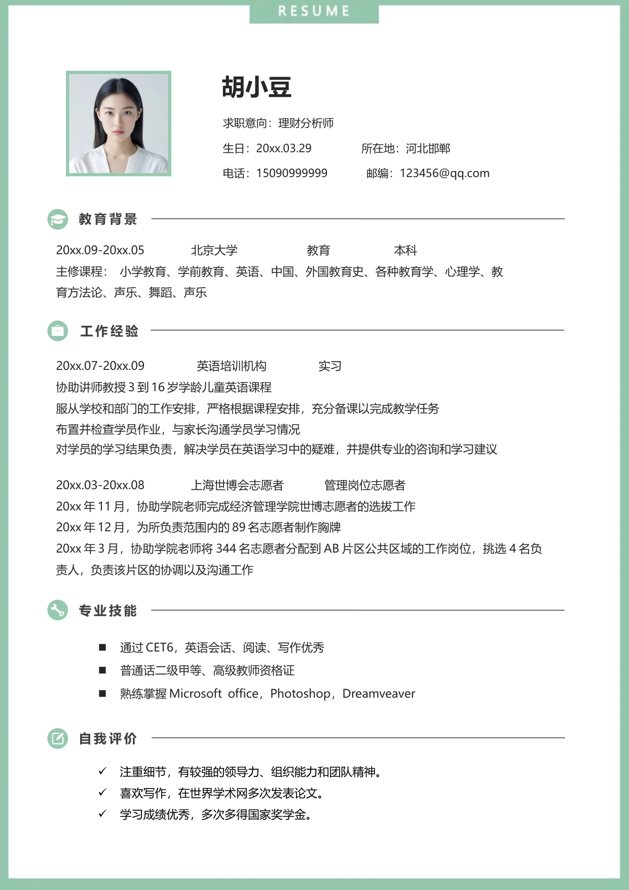

胡小豆
求职意向：理财分析师
生日：20xx.03.29 所在地：河北邯郸
电话：15090999999 邮编：123456@qq.com
20xx.09-20xx.05 北京大学 教育 本科
主修课程： 小学教育、学前教育、英语、中国、外国教育史、各种教育学、心理学、教
育方法论、声乐、舞蹈、声乐
20xx.07-20xx.09 英语培训机构 实习
协助讲师教授3 到16 岁学龄儿童英语课程
服从学校和部门的工作安排，严格根据课程安排，充分备课以完成教学任务
布置并检查学员作业，与家长沟通学员学习情况
对学员的学习结果负责，解决学员在英语学习中的疑难，并提供专业的咨询和学习建议
通过CET6，英语会话、阅读、写作优秀
普通话二级甲等、高级教师资格证
熟练掌握Microsoft office，Photoshop，Dreamveaver
•
注重细节，有较强的领导力、组织能力和团队精神。
•
喜欢写作，在世界学术网多次发表论文。
•
学习成绩优秀，多次多得国家奖学金。
教育背景
20xx.03-20xx.08 上海世博会志愿者 管理岗位志愿者
20xx 年11 月，协助学院老师完成经济管理学院世博志愿者的选拔工作
20xx 年12 月，为所负责范围内的89 名志愿者制作胸牌
20xx 年3 月，协助学院老师将344 名志愿者分配到AB 片区公共区域的工作岗位，挑选4 名负
责人，负责该片区的协调以及沟通工作
专业技能
自我评价
工作经验